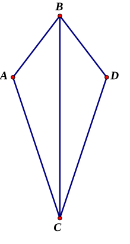
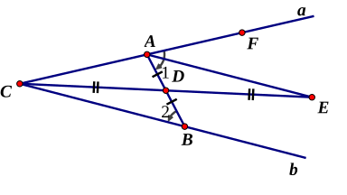
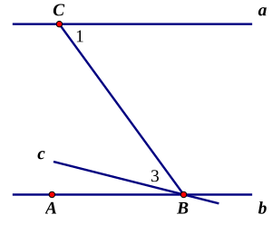

V 边角边全等
例⒈ ＡＢ＝ＤＥ，ＡＣ＝ＤＦ，∠Ａ＝∠Ｃ，ＢＣ＝３１。ＥＦ的长度是多少？
解答
三角形ＡＢＣ全等于三角形ＤＥＦ。所以ＥＦ＝ＢＣ，长度也是３１。
公理
两对应边的长度分别相等，而且它们的夹角大小也相等。那么这两个三角形全等。
性质
全等的两个三角形，对应边相等，对应角也相等。全等的图形形状和大小都相同。全等的图形能彼此重合，或镜像反转后重合。
练习题 ＡＢ＝ＢＤ，∠ＡＢＣ＝∠ＣＢＤ。ＡＣ＝４２，ＣＤ等于多少？

X 对顶角
例⒉ ∠１＝３３°。∠２多大？

第１页，共２页
解答
∠１＋∠３＝１８０°，∠２＋∠３＝１８０°，所以∠１＝∠２。答案是３３°。
定理
对顶角相等。
练习题 Ｃ是ＡＤ的中点，也是ＢＥ的中点。ＡＢ＝９，ＤＥ多长？

Z 内错角与平行线
例⒊ ∠１＝５４°。∠２＝５４°。ａ和ｂ的位置关系是怎么样的？

定义
平行线不相交。
答案
如果两条直线的内错角相等，那么这两条直线平行。所以ａ平行于ｂ。
证明
假设ａ和ｂ相交，那么取ＡＢ中点Ｄ，延长ＣＤ，使得ＤＥ＝ＣＤ。三角形ＢＤＣ和三角形ＡＤＥ全等（边角边），因此∠ＥＡＤ＝∠２。那么∠ＦＡＥ＝∠１－∠ＥＡＤ，就变成了０度！不可能吧。因此最开始的假设就是错的，只能平行了。

方法
这种辅助线称为“倍长中线”。
逆定理
如果两条直线平行，那么这两条直线的内错角相等。证明如下：
已知ａ与ｂ平行。假设∠１≠∠ＡＢＣ，那就从Ｂ点作一条线ｃ使得∠１＝∠３。于是ａ与ｃ平行。从Ｂ点经过的就有两条线与ａ平行啦！这不行啊。所以∠１必须等于∠ＡＢＣ。

练习题 ＡＢ与ＣＤ平行且相等。ＢＦ＝ＤＥ。请证明：ＡＥ与ＣＦ平行且相等。

FC 同位角、同旁内角
例⒋ ａ平行于ｂ。已知∠１＝１２５°，那么∠２多少度？∠３多少度？

解答
∠２跟∠１是两条平行线的同位角，因此相等，∠２也是１２５°。∠３和∠１是两条平行线的同旁内角，相加等于１８０°，所以∠３＝５５°。
证明
∠４跟∠１是平行线间的内错角，自然相等。∠４和∠２是对顶角，所以∠２＝∠４。∠４跟∠３相加等于１８０°，因此∠１跟∠３也是。
逆定理
同位角和同旁内角也能证明两直线平行。如果要证明，跟内错角的方法一样。
练习题 ａ∥ｂ，ｃ∥ｄ。∠１＝８０度，∠２多少度？

∆ 三角形内角和
例⒌ ∠Ａ＝５５°，∠Ｂ＝７５°，∠Ｃ多少度？

第１页，共２页
解答
１８０°－５５°－７５°＝５０°。
定理
三角形的内角和是１８０°。
证明
延长ＡＣ并且过Ｃ作ＡＢ的平行线。那么∠１＋∠２＋∠Ｃ＝１８０°。而∠Ａ＝∠１（同位角），∠Ｂ＝∠２（内错角）。
练习题 ＡＢ＝ＡＣ＝ＢＣ。∠Ａ多少度？